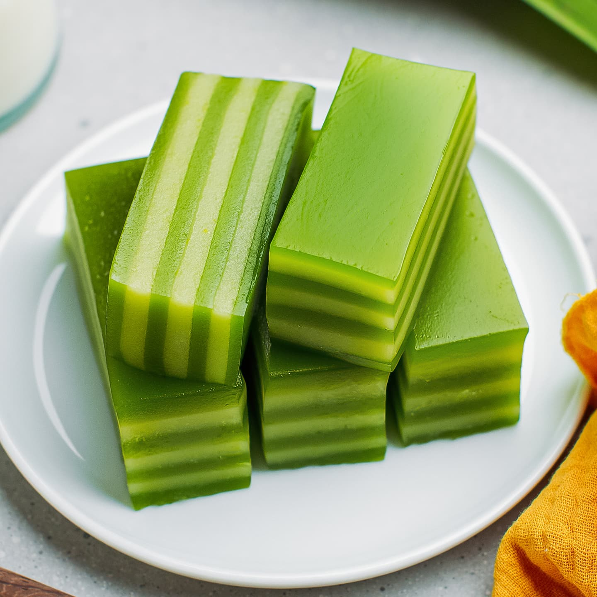

Bánh Da Lợn
Steamed Layered Cake

Ingredients
Green Layer
- 1 1/2 cups tapioca starch
- 1/4 cup rice flour
- 3/4 cup sugar
- 2 cups water
- 1/4 tsp Pandan paste
- 1/4 tsp vegetable oil
Yellow Layer
- 1/2 cup peeled split mung bean
- 1/8 tsp salt
- 1 3/4 cups water
- 3/4 cup tapioca starch
- 2 Tbsp rice flour
- 3/4 cup sugar
- 4 oz coconut milk
- 2 drops yellow food coloring
Directions
- Wash the mung bean by rinsing with cool water 3 times. Cover the beans with hot water and let soak for 2 hours.
- Rinse the beans with cool water again and drain well.
-
Transfer the beans into a saucepan along with the salt and 1 3/4 cups water. Bring to a boil over High heat. Stir and then reduce the heat to Low.
Skim off the foam and discard. Cook the beans until the liquid is completely absorbed, approximately 15 minutes. Remove from the heat and let cool completely.
-
For the yellow batter, add the cooked mung beans, tapioca starch, rice flour, sugar, coconut milk, and food coloring into the blender and mix on High
for 30-45 seconds or until smooth. Measure out 18 oz of the yellow batter and set aside for now.
-
To make the green batter, combine tapioca starch, rice flour, and sugar in a large measuring cup. Add the water and stir until the mixture is smooth.
Add the pandan paste and mix well. This should yield 24 oz. (If less, add water until you have 24 oz of batter.)
- Using a paper towel, coat the cake pan with a thin layer of vegetable oil.
- Fill the steamer basin halfway with water and then bring to a boil over High heat. Reduce the heat to Low. Place the empty cake pan into the steamer and steam for 2 minutes.
Layer 1
Stir the green batter. Measure out 8 oz of batter and pour into the cake pan. Cover and steam for 5 minutes. Remove the lid to release the steam. Cover and steam for another 5 minutes.Layer 2
Stir the yellow batter. Measure out 9 oz of batter and gently pour over the first layer. Cover and steam for 5 minutes. Remove the lid to release the steam. Cover and steam for another 5 minutes.Layer 3
Stir the green batter. Measure out 8 oz of batter and gently pour over the back of a large spoon and into the cake pan. Cover and steam for 6 minutes. Remove the lid to release the steam. Cover and steam for another 6 minutes.Layer 4
Stir the yellow batter. Pour the remaining batter into the pan. Cover and steam for 7 minutes. Remove the lid to release the steam. Cover and steam for another 7 minutes.Layer 5
Stir the green batter. Gently pour the remaining batter over the back of a large spoon and into the cake pan. Cover and steam for 7 minutes. Remove the lid to release the steam. Cover and steam for another 8 minutes.- Remove from the steamer and let cool for at least 1 hour.
- Oil a large knife or wavy knife with vegetable oil. Cut the cake into small pieces. Enjoy!
-
Store any leftover cake in an air-tight container in the refrigerator. It’s good for up to 1 week. Optionally, freeze the cake for up to 2 months.
To reheat, microwave on Low for 20-30 seconds.